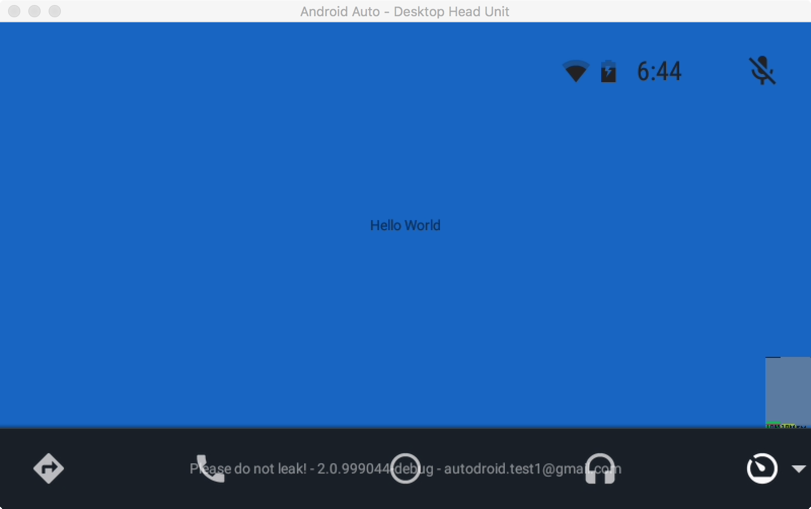

Android Auto currently does not support running regular Android Activities. The class that forms the basis of an Android Auto application is the CarActivity class. In addition to this, there is the CarActivityService class that forms the launching point for all Android Auto applications.
Let's go ahead and get these set up. We create two new files:
HelloWorldCarActivity.java
package exp.helloworld;
import android.os.Bundle;
import com.google.android.apps.auto.sdk.CarActivity;
public class HelloWorldCarActivity extends CarActivity {
@Override
public void onCreate(Bundle bundle) {
super.onCreate(bundle);
getCarUiController().getStatusBarController()
.setTitle(getString(R.string.app_name));
setContentView(getLayoutInflater().inflate(R.layout.main_layout, null));
}
}In the block above, we are setting up the title of the application and the content view with a basic layout that is defined below.
HelloWorldService.java
package exp.helloworld;
import com.google.android.apps.auto.sdk.CarActivity;
import com.google.android.apps.auto.sdk.CarActivityService;
public class HelloWorldService extends CarActivityService {
@Override
public Class<? extends CarActivity> getCarActivity() {
return HelloWorldCarActivity.class;
}
}Finally, we create a starter layout file for our main content view.
<?xml version="1.0" encoding="utf-8"?>
<FrameLayout xmlns:android="http://schemas.android.com/apk/res/android"
android:layout_width="match_parent"
android:layout_height="match_parent"
android:background="@color/car_blue_800" >
<TextView
android:layout_width="wrap_content"
android:layout_height="wrap_content"
android:layout_gravity="center"
android:text="@string/hello_world" />
</FrameLayout>After we have the code in place, we need to declare our manifest entries and other required metadata so the application shows up in Android Auto. We set up our manifest to look like this:
AndroidManifest.xml
<manifest package="exp.helloworld"
xmlns:android="http://schemas.android.com/apk/res/android">
<application
android:allowBackup="true"
android:icon="@mipmap/ic_launcher"
android:label="@string/app_name"
android:supportsRtl="true"
android:theme="@style/AppTheme">
<meta-data android:name="com.google.android.gms.car.application"
android:resource="@xml/automotive_app_desc" />
<service android:name=".HelloWorldService"
android:label="@string/app_name"
android:exported="true">
<intent-filter>
<action android:name="android.intent.action.MAIN" />
<category android:name="com.google.android.gms.car.category.CATEGORY_PROJECTION" />
<category android:name="com.google.android.gms.car.category.CATEGORY_PROJECTION_OEM" />
</intent-filter>
</service>
</application>
</manifest>automotive_app_desc.xml
<?xml version="1.0" encoding="utf-8"?>
<automotiveApp>
<uses name="service" />
<uses name="projection" />
<uses name="notification" />
</automotiveApp>Build and deploy your application as usual.
Android Studio does not let you deploy an application using instant run without a main activity. As using instant run can speed up build and deployment, go ahead and create an empty main activity to streamline your development workflow. This main activity will not be used in the example. In a real application, you will most likely have a main activity that you launch on the phone when not in Android Auto, so this should not be a problem outside of this codelab.
After you have deployed your application, start Desktop Head Unit and click on the rightmost icon on the activity bar at the bottom. Your application should be displayed in the menu there.

Note: We can skip this step for now since we are developing against the Desktop Head Unit. However, when you are writing your final application you should include a head unit restriction and make sure your application works with your targeted head units.
You will need to restrict your application to run only on your head units. This is achieved by adding a head unit whitelist, in which you must whitelist at least the Make and any other fields you may wish to filter on.
You will need to modify your automotive_app_desc.xml to look like the following:
automotive_app_desc.xml
<?xml version="1.0" encoding="utf-8"?>
<automotiveApp>
<uses name="service" />
<uses name="projection" />
<uses name="notification" />
<head-unit-whitelist>
<car-info
manufacturer="<Specify make here>"
modelContains="<Specify model here>" />
</head-unit-whitelist>
</automotiveApp>